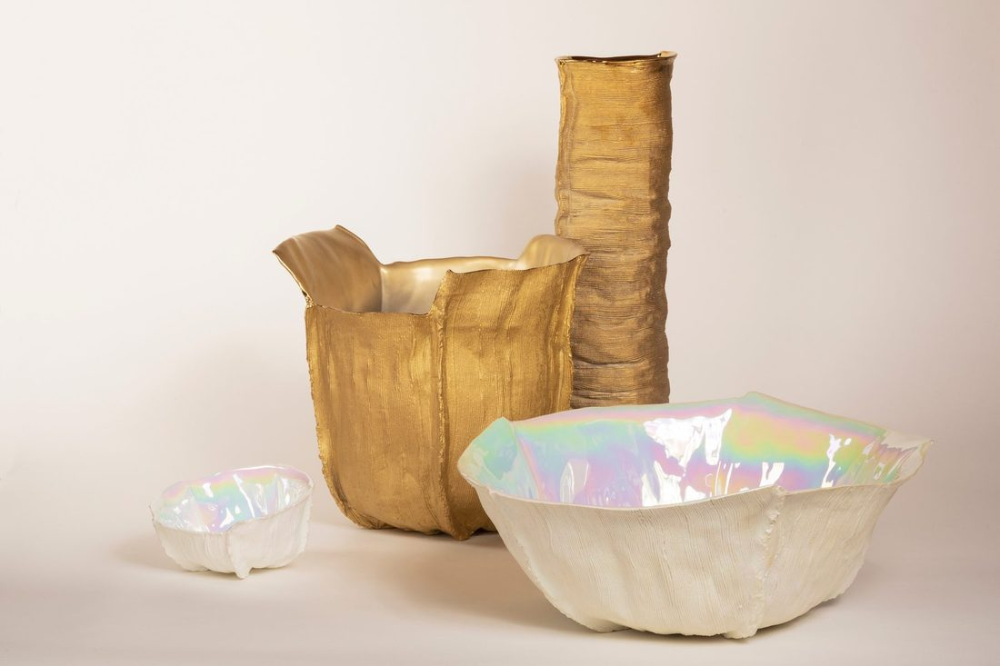

MAISONDARTISTE-IB-14
Inge Bečka →The Ridge Collection - The VERY BIG Ridge │ pearl
€ 3.500,–
available
Enquire about this work
Or message Inge on WhatsApp See all work by Inge Bečka
100% of the sale price goes to the maker. MADART Foundation takes no commission and holds no exclusive contract. You buy from Inge Bečka; we made the room.